One hundred and fourteen reviews in Cedar Rapids and not one of them under five stars. Justin Bates quotes it, grinds it, and hauls the chips away.
Get a bidGround out properly so you can plant, sod or build over the top of it.
Ground below grade, not shaved off at the dirt line. Deep enough that you can put sod or a new tree over it and not hit wood.
Whole fencerows and lot clearings. Per-stump pricing gets better the more of them there are in one trip.
We take the grindings with us if you want them gone, or leave them piled for backfill if you would rather keep them. Your call, tell us up front.
Hole filled and levelled so it does not become a low spot that swallows your mower next spring.
Backyards, gates, between houses. Most of Cedar Rapids' older neighbourhoods have no good way in and we work in them anyway.
When a tree comes down and the crew that took it away left the stump, that is the call we get most.
Reviews landing within the last week, which is its own kind of proof.


This is where your job photos go. Lisa W. wrote: “He is very professional and particular with his work. He made sure the area was clean before he left.” That is the photo that belongs here.
Linn County and out toward Iowa City.
Below grade, far enough that you can lay sod, plant, or pour over the top without hitting wood. Shaving it off flush at the dirt line looks fine for a month and then the ground sinks.
Either way, and it is worth deciding before we arrive. Hauling them off costs a little more. Plenty of people keep them for backfill or beds.
Usually. A photo and a rough diameter is enough for most stumps. Justin will give you a number over the phone rather than making you wait on a site visit.
Stumps are the specialty. Very often we are the call after somebody else took the tree down and left the stump behind.
Usually. Most of the older Cedar Rapids neighbourhoods have narrow gates and we work in them all the time. Measure the gate opening and tell us when you call.
Cleaned up before we leave. That shows up in the reviews more than the grinding does, which tells you what people actually care about.
Quickest way is a call. A picture of the stump usually gets you priced same day.
Most stumps get quoted over the phone or off a photo. No need to book a visit just to get a number.
(319) 431-7033Grind It Up · Cedar Rapids, IA
Got a stump? Send a photo or leave your number and Justin will get you a price, usually same day.